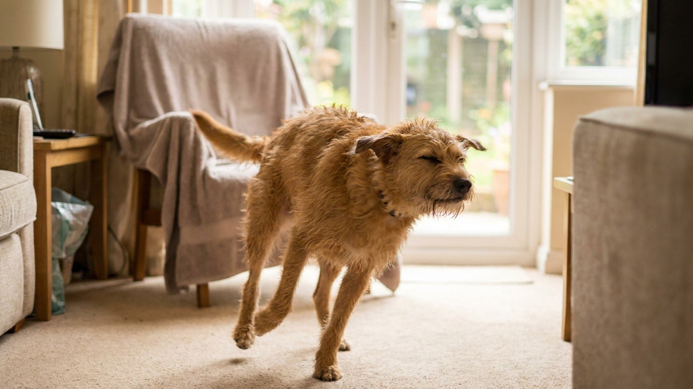

Зумис после купания: почему собака носится и как обезопасить квартиру

9 июня 2026 · 6 минут чтения · Поведение · Уход · Собаки
Вы только что вымыли собаку, завернули в полотенце, поставили на пол — и она срывается с места и несётся по квартире кругами, врезаясь в диваны. Это не сбой и не агрессия: это FRAP (frenetic random activity period) — один из самых ярких поведенческих феноменов у собак. После купания он случается особенно часто — и вот почему.
🐾 Первая помощь — всегда под рукой
AnimaLife подскажет, что делать в тревожной ситуации с питомцем ещё до визита к врачу. Откройте в один тап.
Открыть AnimaLife → Открыть в MAX →
Что такое FRAP: краткий ликбез
FRAP — frenetic random activity period, или «период хаотичной активности». В народе — «зумис» или «зумики» (от английского zoomies). Собака вдруг срывается с места, бегает кругами, делает резкие повороты, прыгает, может «боксировать» воздух передними лапами или крутиться вокруг оси.
FRAP нормален и встречается у большинства собак независимо от породы и возраста, хотя у щенков и молодых собак бывает чаще. Длится обычно от 30 секунд до 5 минут, после чего собака резко останавливается и выглядит совершенно спокойной — как будто ничего не было.
Почему зумис случается именно после купания
Купание для большинства собак — стрессовое событие. Даже если собака переносит его спокойно, процесс создаёт физиологическое возбуждение:
- Выброс кортизола и адреналина. Ванна, удержание, звук воды, непривычные тактильные ощущения — всё это вызывает лёгкое стрессовое возбуждение. Как только процедура заканчивается, накопленная энергия высвобождается.
- Сенсорная перегрузка от запахов шампуня. Чужой запах на собственной шерсти — неприятно и раздражающе. Беготня помогает «стряхнуть» ощущение и восстановить привычный запаховый профиль (плюс катание по полу, дивану — по той же причине).
- Ощущение мокрой шерсти. Собаки не любят быть мокрыми. Активное движение помогает высохнуть и избавиться от дискомфорта.
- Облегчение после стресса. После того как неприятное закончилось, мозг получает выброс эндорфинов — «ура, выжил!». Это и запускает FRAP.
Нормально ли это: признаки здорового FRAP
Здоровый FRAP выглядит так:
- Собака выглядит «радостно безумной», не испуганной. Рот открыт, уши назад, хвост мотается.
- Движения скоординированные — не шатается, не теряет равновесие.
- Заканчивается сам через 1–5 минут.
- После — собака спокойна, нормально дышит, никаких остаточных признаков стресса.
Это нормальный выброс накопленного возбуждения. Не нужно останавливать FRAP — это контрпродуктивно и неэффективно.
Как обезопасить квартиру во время зумис после ванны
Мокрая собака + скользкий пол + резкие повороты = риск травмы. Несколько простых мер снижают риск:
- Закройте скользкие участки. Если пол ламинат или плитка, постелите резиновые коврики или нескользящий ковёр в зоне, где собака обычно бегает. Особенно важно у поворотов.
- Уберите острые углы мебели. Хотя бы временно прикройте стеклянные столы, углы комодов. Собака на скорости может не вписаться.
- Закройте лестницу. Если в доме есть лестница — закройте доступ на время зумис. Падение с лестницы в состоянии ажиотажа — реальный риск.
- Дайте пространство. Не загоняйте собаку в маленькую комнату. Лучше открыть гостиную или коридор, где есть место для разгона.
- Не пытайтесь поймать. Ловля во время FRAP усиливает возбуждение и может привести к случайному укусу или сбитому с ног хозяину.
Когда зумис — сигнал, на который стоит обратить внимание
В большинстве случаев FRAP безобиден. Обратите внимание, если:
- Зумис возникают очень часто в течение дня — это может указывать на хроническое перевозбуждение или недостаточную нагрузку.
- Движения во время FRAP нескоординированы — собака спотыкается, теряет равновесие. Это повод показаться ветеринару.
- Зумис сопровождаются агрессией — нападением на предметы или людей со злобным рычанием. Это не типичный FRAP.
- После «зумис» собака долго не успокаивается, дышит часто, выглядит растерянной — высокое фоновое возбуждение, нуждающееся в коррекции образа жизни.
Как снизить интенсивность зумис после ванны
Если зумис после каждого купания превращаются в хаос, есть несколько способов снизить их интенсивность:
- Начинайте сушить феном сразу. Фен с тёплым воздухом убирает ощущение мокрой шерсти быстрее, чем полотенце — один из триггеров FRAP уходит.
- Дайте лакомство сразу после ванны. Позитивное переключение внимания снижает пиковое возбуждение.
- Короткая прогулка после купания. Выброс энергии на улице — куда лучший вариант, чем в квартире. Если погода позволяет — выйдите сразу после ванны.
- Постепенно приучайте собаку к купанию. Чем меньше стресс от самой процедуры, тем слабее выброс после.
Зумис у щенков и пожилых собак: разница
У щенков FRAP случается чаще и интенсивнее — нервная система ещё не зрелая, регуляция возбуждения хуже. Это нормально и с возрастом снижается.
У пожилых собак интенсивность зумис снижается. Если пожилая собака вдруг начала носиться чаще обычного — это повод не умиляться, а обратить внимание: иногда избыточное возбуждение связано со снижением когнитивных функций или дискомфортом, который проявляется нетипичным поведением.
🐾 Экономьте на лишних визитах к врачу
Сначала спросите AI-ветеринара в AnimaLife — часто этого достаточно, чтобы понять, нужен ли визит к врачу.
Спросить бесплатно → Спросить в MAX →
🐾 Понравился разбор?
Подпишитесь на канал — каждый день разбираем по одному тревожному симптому у кошек и собак: что в пределах нормы, а когда пора к врачу. Подпишитесь, чтобы не пропустить разбор, который может спасти здоровье вашего питомца.
← Все статьи · Открыть AnimaLife в Telegram · RSS